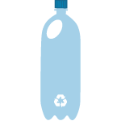
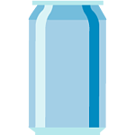
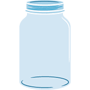

Recycling has some obvious impacts, like protecting the environment and quality of life improvements. It helps with more than that though. Here are some examples:
- It helps with the reduction of waste, needed to be picked up by municipalities and transported to landfills, that not only take up a lot of space, but are also ugly and smell bad
- It provides a saving in natural resources, like metals etc. that are usually not renewable. And it lessens the energy needed to produce/mine/process them
- It contributes to the general awareness about environment
- It creates jobs
Did you know that...
|

|
for every kilogram of plastic, that you recycle, you also save 0.7 kilos of greenhouse gases? |
|

|
by recycling one aluminium can, you save enough energy to watch TV for 3 hours? |
|
|
cardboard can be recycled at least 7 times? |
|
|
almost one third of all waste by weight are organic materials like food, leaves, and grass? |
|

|
glass is infinitely recycleable without loosing any of its quality? |